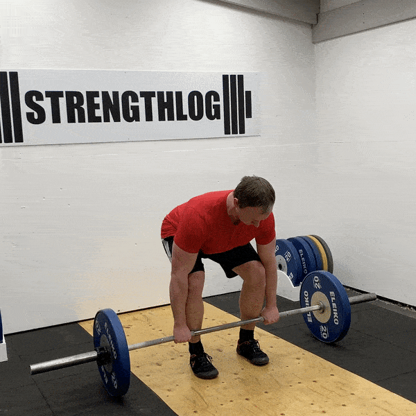

How to do it:
1. Stand with your feet hip-width apart, with your toes pointing slightly outward. The barbell should be over the middle of your feet, close to your shins.
2. Bend at the hips and knees to reach the bar. Grip the barbell slightly wider than shoulder-width apart. You can use an overhand grip (both palms facing you) or a mixed grip (one palm facing you and the other facing away).
3. Keep your back straight and chest up. Engage your core and ensure your shoulders are slightly in front of the bar. Your hips should be higher than your knees but lower than your shoulders.
4. Pull the bar close to your body, with a straight back, until you are standing straight. Keep the bar close to your body, and your arms straight throughout the lift. The bar should travel in a straight line vertically.
5. Reverse the motion by hinging at the hips and bending the knees. Lower the bar to the starting position in a controlled manner, maintaining a straight back.
6. Reset your position if necessary.
3-4 sets of 8-12 reps
